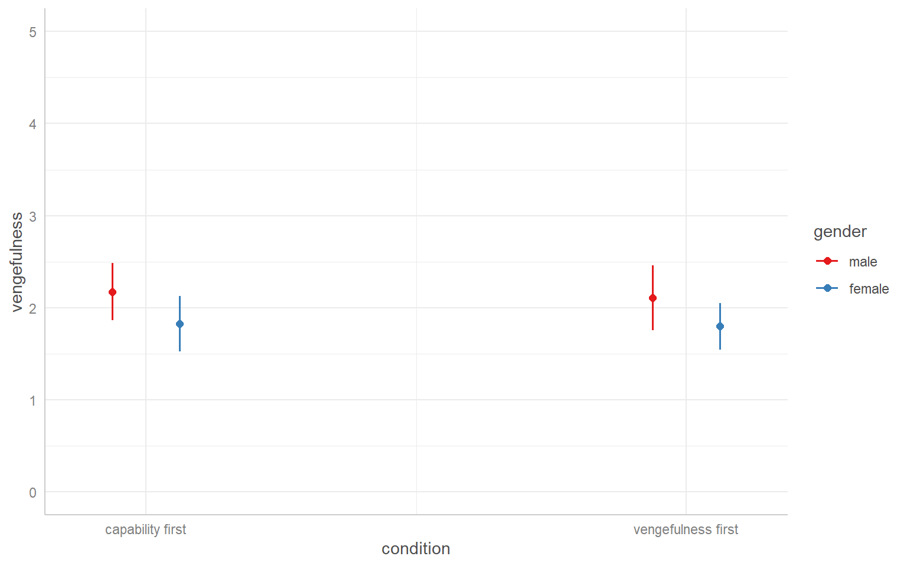
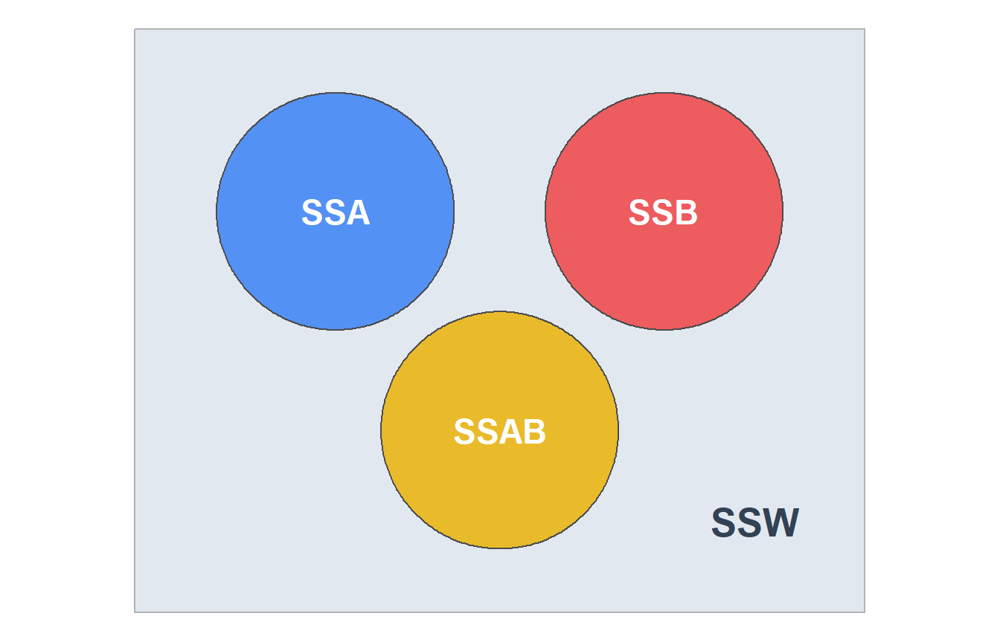
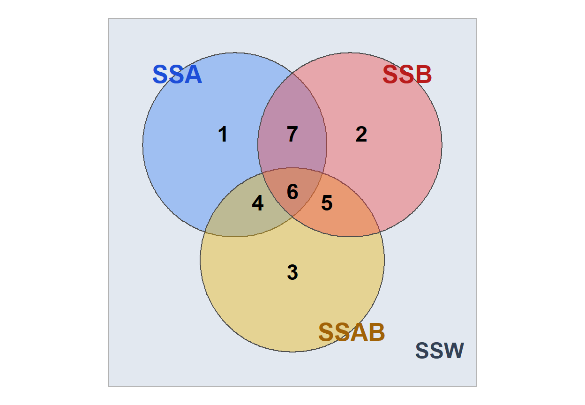
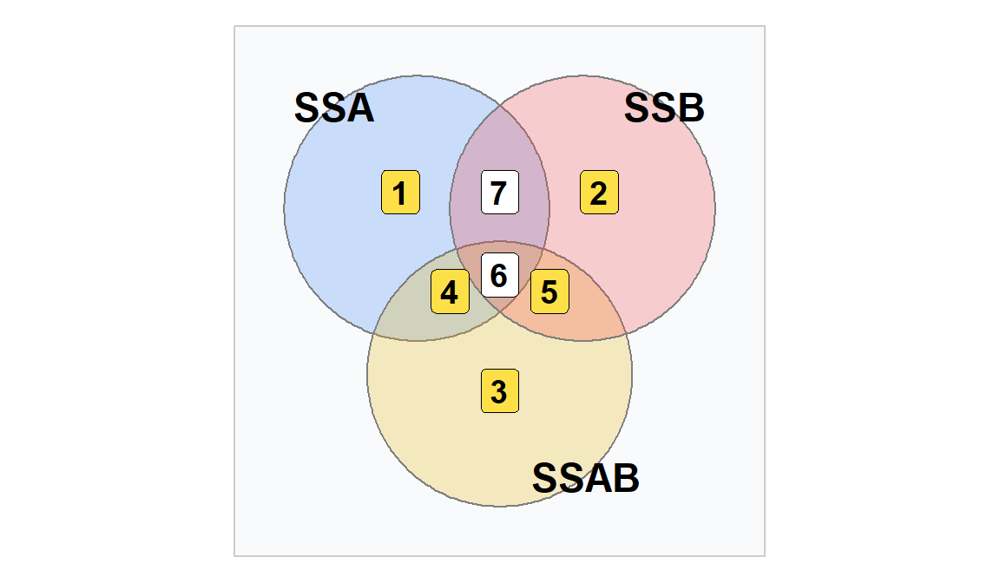
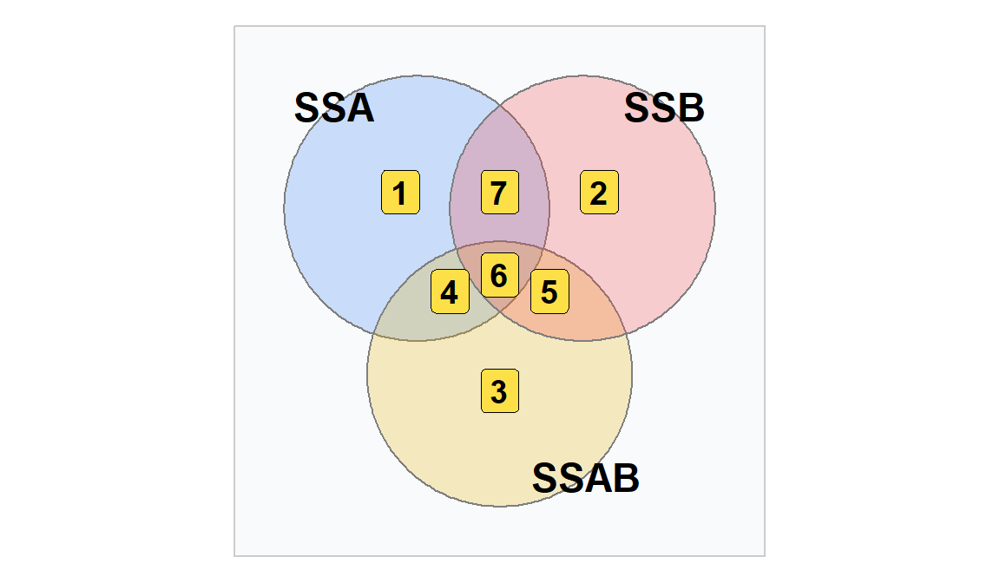

In the examples we’ve been dealing with so far, our factorial ANOVAs have had balanced sample sizes
This is desirable when possible
Not always possible!
Original Study:
Exline, J. J., Baumeister, R. F., Zell, A. L., Kraft, A., & Witvliet, C. V. O. (2008). Not so innocent: Does seeing one’s own capacity for wrongdoing predict forgiveness? Journal of Personality and Social Psychology, 94, 495-515.
Replication study link: https://osf.io/nrjs5
Steps:
DV: Vengefulness scores
IV1: Order of conditions (capability/empathy first, vengefulness first)
IV2: Gender (male/female)

In this dataset, not all groups have equal sample sizes:
The research design problem:
Why might this be a problem?
Number of errors made in a driving simulation
| Non-Drinking | Drinking | Row Means | |
|---|---|---|---|
| Michigan | 13 15 16 12 \(\bar{y}_{11} = 14\) |
18 20 22 19 21 23 17 18 22 20 \(\bar{y}_{12} = 20\) |
\(\bar{y}_{1\bullet} = 18.29\) |
| Arizona | 9 11 14 10 6 8 12 13 11 6 \(\bar{y}_{21} = 10\) |
28 29 21 20 22 \(\bar{y}_{22} = 24\) |
\(\bar{y}_{2\bullet} = 14.67\) |
| Col Means | \(\bar{y}_{\bullet 1} = 11.14\) | \(\bar{y}_{\bullet 2} = 21.33\) |
What do you think about these results?
| Non-Drinking | Drinking | Row Means | |
|---|---|---|---|
| Michigan | 17 13 15 16 12 11 13 15 16 12 \(\bar{y}_{11} = 14\) |
18 20 22 19 21 23 17 18 22 20 \(\bar{y}_{12} = 20\) |
\(\bar{y}_{1\bullet} = 17.00\) |
| Arizona | 9 11 14 10 6 8 12 13 11 6 \(\bar{y}_{21} = 10\) |
28 29 21 20 22 20 28 24 21 27 \(\bar{y}_{22} = 24\) |
\(\bar{y}_{2\bullet} = 17.00\) |
| Col Means | \(\bar{y}_{\bullet 1} = 12.00\) | \(\bar{y}_{\bullet 2} = 22.00\) |
If we equalized the sample sizes:
If sample sizes are equal, then group membership is uncorrelated
| Factor 1 | Factor 2 |
|---|---|
| 1 | 1 |
| 1 | 1 |
| 1 | 2 |
| 1 | 2 |
| 2 | 1 |
| 2 | 1 |
| 2 | 2 |
| 2 | 2 |
\(\text{cor}(\text{Factor 1}, \text{Factor 2}) = 0\)
If sample sizes are unequal, then group membership is correlated
| Factor 1 | Factor 2 |
|---|---|
| 1 | 1 |
| 1 | 2 |
| 1 | 2 |
| 1 | 2 |
| 2 | 1 |
| 2 | 1 |
| 2 | 2 |
| 2 | 2 |
\(\text{cor}(\text{Factor 1}, \text{Factor 2}) = -0.26\)

If sample sizes are unequal, group membership is correlated.

| Source | \(df\) | \(SS\) | Diagram Portion |
|---|---|---|---|
| \(A\) | \(a-1\) | \(SS(A \mid B, AB)\) | 1 |
| \(B\) | \(b-1\) | \(SS(B \mid A, AB)\) | 2 |
| \(AB\) | \((a-1)(b-1)\) | \(SS(AB \mid A, B)\) | 3 |
| Error | \(N-ab\) | ||
| Total | \(N-1\) |

| Source | \(df\) | \(SS\) | Diagram Portion |
|---|---|---|---|
| \(A\) | \(a-1\) | \(SS(A \mid B)\) | 1 + 4 |
| \(B\) | \(b-1\) | \(SS(B \mid A)\) | 2 + 5 |
| \(AB\) | \((a-1)(b-1)\) | \(SS(AB \mid A, B)\) | 3 |
| Error | \(N-ab\) | ||
| Total | \(N-1\) |

Order of terms in model: \(A \to B \to AB\)
| Source | \(df\) | \(SS\) | Diagram Portion |
|---|---|---|---|
| \(A\) | \(a-1\) | \(SS({\color{red} A})\) | 1 + 4 + 6 + 7 |
| \(B\) | \(b-1\) | \(SS({\color{blue} B} \mid A)\) | 2 + 5 |
| \(AB\) | \((a-1)(b-1)\) | \({SS(AB {\mid} A, B)}\) | 3 |
| Error | \(N-ab\) | ||
| Total | \(N-1\) |
Order of terms in model: \(B \to A \to AB\)
| Source | \(df\) | \(SS\) | Diagram Portion |
|---|---|---|---|
| \(B\) | \(b-1\) | \(SS({\color{blue} B})\) | 2 + 5 + 6 + 7 |
| \(A\) | \(a-1\) | \(SS({\color{red} A} \mid B)\) | 1 + 4 |
| \(AB\) | \((a-1)(b-1)\) | \({SS(AB {\mid} A, B)}\) | 3 |
| Error | \(N-ab\) | ||
| Total | \(N-1\) |
When data are balanced, all three give the same results
When data are unbalanced:
aov()When data are balanced, all three give the same results
When data are unbalanced:
Type II
ezANOVAType III
RThe way R is programmed, Type II is straightforward. However, Type III is not always
R and most common contrast scheme| Group / Cell | IV1: Order | IV2: Gender | Dummy \(D_1\) | Dummy \(D_2\) | Dummy \(D_1 \times D_2\) | Effects \(E_1\) | Effects \(E_2\) | Effects \(E_1 \times E_2\) |
|---|---|---|---|---|---|---|---|---|
| Cell 1 | Cap/Emp First | Male | 0 | 0 | 0 | -1 | -1 | +1 |
| Cell 2 | Cap/Emp First | Female | 0 | 1 | 0 | -1 | +1 | -1 |
| Cell 3 | Vengefulness First | Male | 1 | 0 | 0 | +1 | -1 | -1 |
| Cell 4 | Vengefulness First | Female | 1 | 1 | 1 | +1 | +1 | +1 |
The littel-a anova() function (built into R) gives us Type I
Analysis of Variance Table
Response: vengefulness
Df Sum Sq Mean Sq F value Pr(>F)
condition 1 0.270 0.2698 0.3524 0.55377
gender 1 3.454 3.4541 4.5124 0.03553 *
condition:gender 1 0.014 0.0138 0.0180 0.89339
Residuals 131 100.278 0.7655
---
Signif. codes:
0 '***' 0.001 '**' 0.01 '*' 0.05 '.' 0.1 ' ' 1carFor Type II and III we can use car::Anova() or ez::ezANOVA(). For Type II using car::Anova():
ezFor Type II and III we can use car::Anova() or ez::ezANOVA(). For Type II using ez::ezANOVA():
ezANOVA() will always warn you about unbalanced sample sizes
carFor Type II and III we can use car::Anova() or ez::ezANOVA(). For Type III using car::Anova(), we must set orthogonal (e.g. effects coded) contrasts before using aov() or the results will be incorrect. We can do this globally for all factors by first specifying options(contrasts = c(unordered = "contr.sum", ordered = "contr.poly"))
contr.sum is effects codycontr.poly is orthogonal polynomial contrasts for ordinal factors (not covered)car CodeAnova Table (Type III tests)
Response: vengefulness
Sum Sq Df F value Pr(>F)
(Intercept) 498.13 1 650.7343 < 2e-16 ***
condition 0.06 1 0.0845 0.77174
gender 3.45 1 4.5106 0.03557 *
condition:gender 0.01 1 0.0180 0.89339
Residuals 100.28 131
---
Signif. codes:
0 '***' 0.001 '**' 0.01 '*' 0.05 '.' 0.1 ' ' 1ezFor Type II and III we can use car::Anova() or ez::ezANOVA(). For Type III using `ez::ezANOVA(), it will handle the contrasts correctly for us on it’s own:
Note that the interaction never changes. Only the main effects results differ for the different types. In this case, the main effects barely even changed! Why?
ges column (\(\eta^2\)) in the ezANOVA() output indicate a small or large interaction effect?The interaction effect is not statistically significant (\(F(1, 131) = .02, p = .89\)). There is a significant main effect of gender (\(F(1, 131) = 4.51\), \(p = .04\)), but no main effect of condition (\(F(1, 131) = .08, p = .77\)). Males have higher vengefulness scores than females (Cohen’s \(d\) = .39).
Note from Mark (note part of APA writeup): Post-hoc tests are not necessary for the effect of gender because this variable has only two levels. Means we don’t need additional tests and can just calculate \(d\) for difference between males and females